Giving a
Technical Presentation
Slides
Show of Hands
- How many people have done public speaking before?
- How many have not done, but want to?
- How many are afraid of public speaking?
The Fear
Public speaking ranks among the top fears people have.
Comedy: Everyone wants you to succeed. They dressed up, they're here, they want to have a good time.
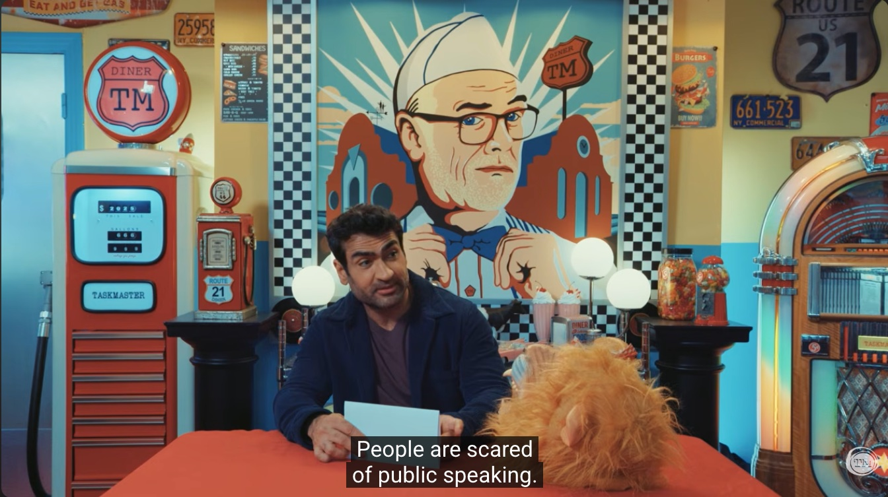
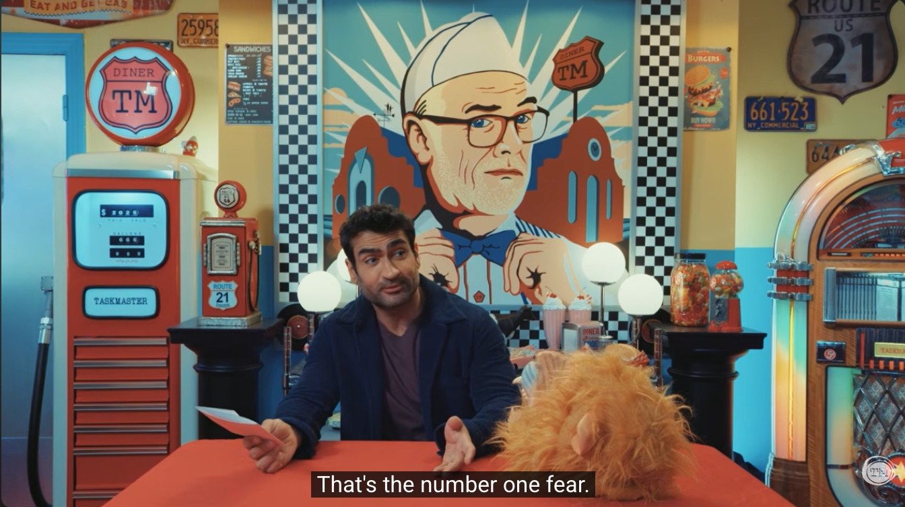
Outline
- 01Types of Public Speaking
- 02Making a Presentation
- 03Interacting with Your Audience & Q&A
- 04Things to Remember
The forms
- Debate
- Elocution / Speech
- Podcasts
- Presentations
- Standup comedy
Types
- Academic research
- Project demo
- Technical talk
- Hackathons
Outline
- 01Types of Public Speaking
- 02Making a Presentation
- 03Interacting with Your Audience & Q&A
- 04Things to Remember
Make it Personalized
- I like to have jokes
- Overview for longer slides
- Metacognition / Story-telling
These slides contain all these elements.
Start with
a rough outline
- Jot down all thoughts you have
- Organize them
- Might have to cut jokes / sections for a more cohesive structure
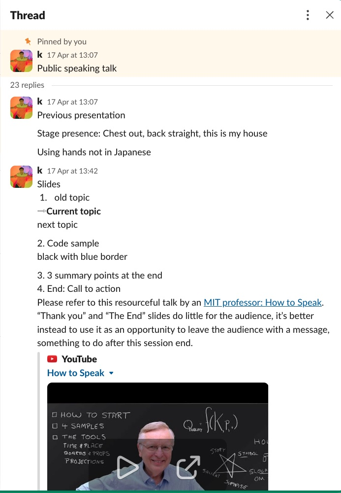
Don't read your slides
Your job is to tell a story.
Slides are a tool to help you remember it.
This meeting could not have been an email.
Images,
images, images
A picture is worth a thousand words.
Pictures also recapture a drifting audience.
Is your slide legible?
Stand at the last seat of the room you're presenting in. Can you read the content?
This is easy to read
You can read this with camera zoom
You can barely read this even with zoom. Don't use this size
Grey text on light grey fails contrast requirements.

People. Will. Take. Pictures.
Design for
the camera
- Keep information brief
- Diagrams explain flow better.
- Walls of texts get ignored.
- Example follows.
Text only
- Metric 1 increased by 2.4% (statistically significant)
- Metric 2 increased by 1.3%
- Metric 1は2.4％増加しました
→ Isolates audience that doesn't speak the presentation language.
Table
Better, but we can still improve.
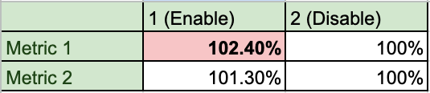
Graph
Metric 1 is statistically significant.
A few finishing touches needed.
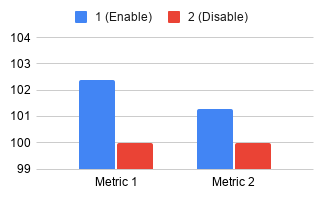
Polished graph
- Annotate directly on the graph. Statistically significant is labeled, not hidden in a footnote.
- Of course, not a golden hammer. Use with discretion.
- Right amount of effort × payoff.
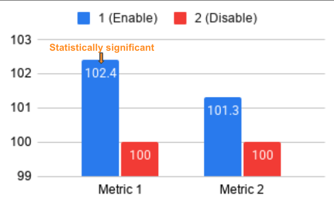
Using these patterns
A comedian always prepares jokes in advance ;)
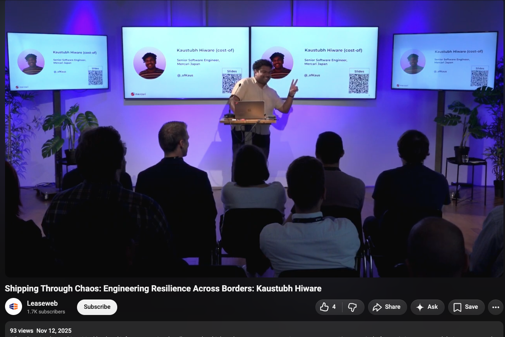
Always copy
See other presentations. Identify what you like and what you don't.
You miss 100% of the shots you don't take.
— Kaustubh Hiware
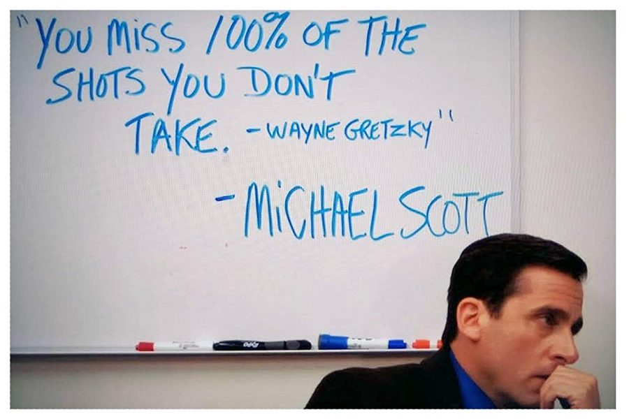
"Thank you" is
a wasted slide
The last slide should be a Call to Action.
Leave them with something to do after the session ends.
Outline
- 01Types of Public Speaking
- 02Making a Presentation
- 03Interacting with Your Audience & Q&A
- 04Things to Remember
Ask, don't assume
Start the presentation by asking how many people have presented publicly before.
Ask how familiar the audience is with your topic.
"This is not my talk. This is our talk."
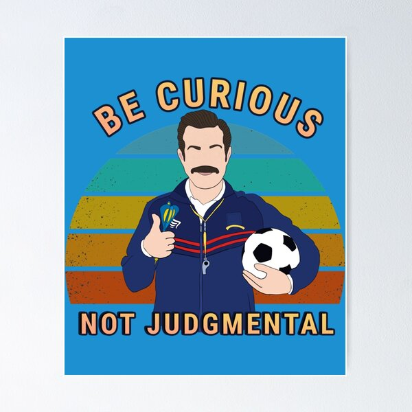
It's just a conversation
- It's okay if you don't have all the answers
- Prepare possible questions in advance
- At hackathons, split by domain: ML, product, design
Handling Questions
Don't make the audience feel stupid for not understanding something.
"Did my explanation make sense?"
Outline
- 01Types of Public Speaking
- 02Making a Presentation
- 03Interacting with Your Audience & Q&A
- 04Things to Remember
Chest out.
Back straight.
This is your house.
This helps get you in the right mind frame.
Practice over perfection
The Parable of the Pottery Class
1 pot, every day for 30 days vs 1 pot after 30 days

Engage your audience
- Audience are like goldfish with short attention spans
- Keep them engaged with images, videos, demos etc
- Use props, stories, voice modulation - but in moderation
- You’re only allowed one slide with a wall of text. This is mine.
EVERYTHING you know can be applied to public speaking.
Show, don't tell
Film-making
Write for your target audience
Tech documentation
STAR: Situation, Task, Action, Result
Interviews
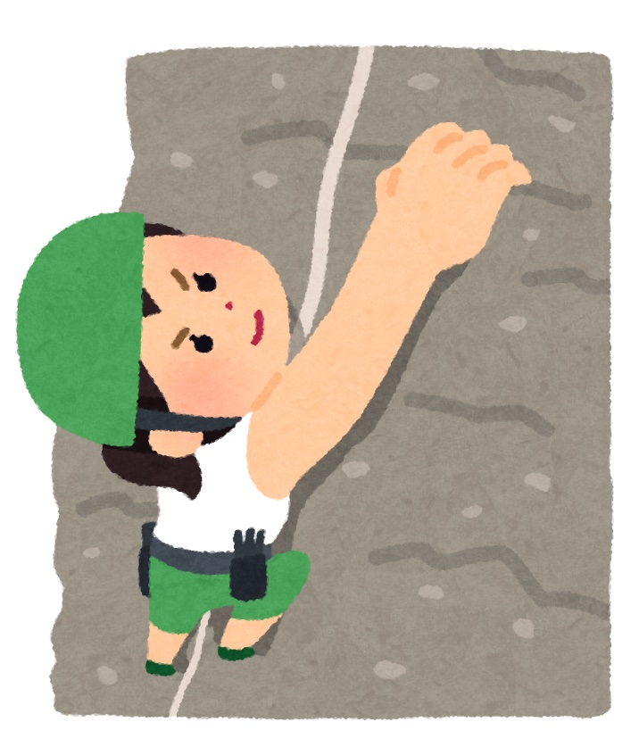
Hero's journey
Story-telling
Language is
not a barrier
- Prepare in advance
- Practise a lot
- Sell a story
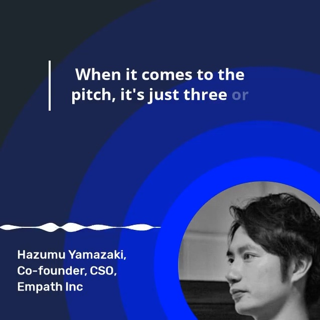
In the age of AI
Writing code is easy. The question is whether you can do it well, make decisions, and communicate them clearly.
AI can build the building, but you are still the architect.
The internet is going to fragment. Authenticity stands out like nothing else.
How to start
- Start with smaller, city-level meetups
- CFS / CFP: Call for Speakers / Proposals
- Mailing lists
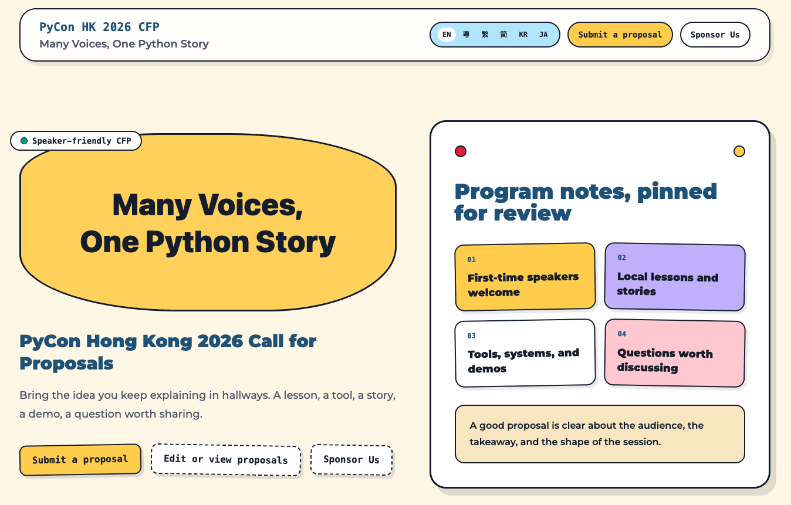